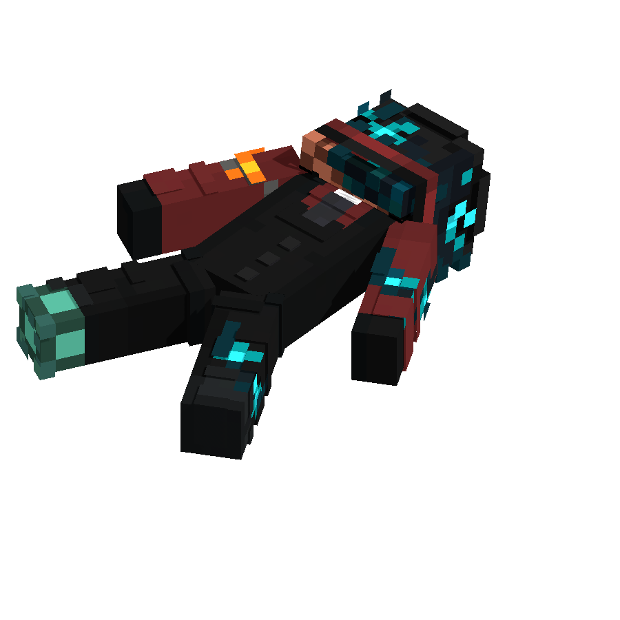

Reality Fault
404

Реальность не обнаружена
Запрошенный фрагмент мира не существует или был утрачен в процессе искажения.


Reality Fault

Реальность не обнаружена
Запрошенный фрагмент мира не существует или был утрачен в процессе искажения.